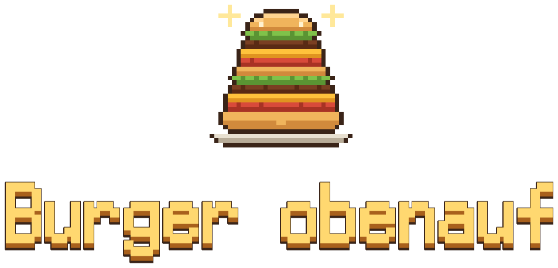
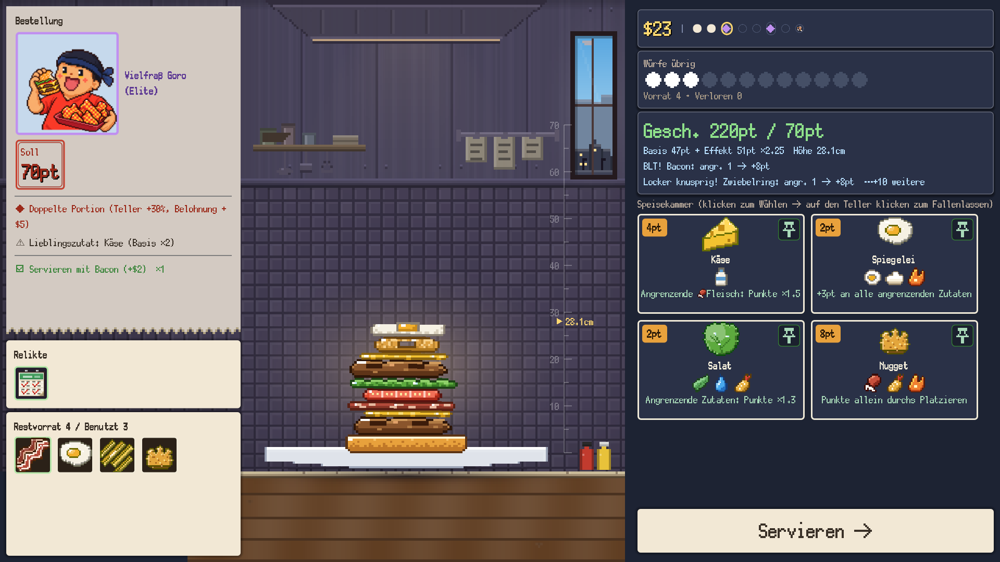
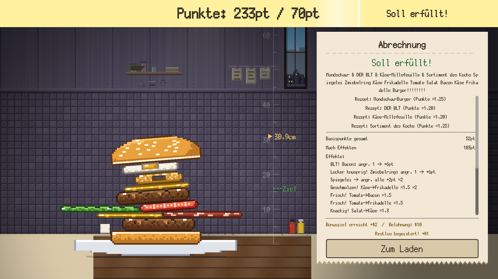
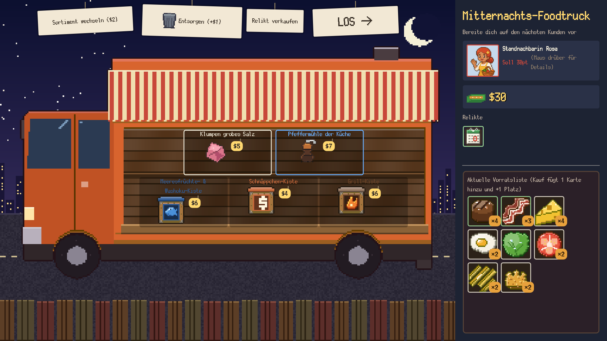

Fallen lassen! Stapeln! Einklemmen für Synergie!
Ein Physik-Stapel-Roguelike mit Burgern
Auf Steam zur WunschlisteErscheint im 4. Quartal 2026 / Windows (Steam)
Worum geht's?
Burger obenauf ist ein Deckbuilding-Roguelike, in dem du Burger mit echter Physik stapelst.
Du führst den Burgerladen. Jeder Kunde nennt ein Soll, und du baust den Burger live auf dem Teller zusammen, um es zu erfüllen. Das Problem: Zutaten gehorchen der Physik. Den Abwurf zu treffen und den Turm stehen zu halten, liegt an dir. Benachbarte Zutaten geben Effekte aneinander weiter – je höher und sauberer dein Turm, desto mehr Punkte.
So läuft eine Runde

Zielen und fallen lassen
Lass Zutaten aus der Hand gezielt auf den Teller fallen und löse Synergien zwischen Nachbarn aus. Sie rollen, kippen und stürzen um.

Einklemmen für Synergie
Setz das obere Brötchen auf und serviere – dann wird gewertet. Die Effekte der Nachbarn greifen ineinander und die Punkte steigen. Verfehlst du das Soll, ist sofort Schluss.

Der nächtliche Foodtruck
Ist ein Kunde erledigt, öffnet der nächtliche Foodtruck (der Laden): Kisten und Relikte kaufen, überflüssige Zutaten entsorgen. Stell den letzten Boss zufrieden, und du hast gewonnen.
Was du stapelst
- Über 90 ZutatenPunkte, Multiplikatoren, Auffangflächen. Jeder Effekt zielt zur Seite
- Über 30 RezepteDie richtige Kombination bringt einen Multiplikator auf den ganzen Burger und schaltet neue Zutaten frei
- Über 40 RelikteDauerhafte Effekte, die ganze Tags anheben
- 8 KöcheEigenes Signature-Brötchen und Startvorrat
- Kunden mit CharakterLieblingszutaten, Abneigungen, Knochen. Die Bestellung ändert sich jedes Mal
- Über 70 ErfolgeDazu Kompendium und Burger-Album
Beweis dich
Der Ladenrang ★0–5 und der Meisterkoch (der Abwurfpunkt pendelt von selbst hin und her) erhöhen den Schwierigkeitsgrad. Die Punkte der täglichen Challenge und der Überstunden landen in den Steam-Ranglisten.
{kind=link}
{kind=link}
{kind=link}
{kind=link}
{kind=link}
Spielinfos
- Titel
- Burger obenauf
- Auch bekannt als
- A Bun Above / いただきバーガー
- Genre
- Physik-Stapeln × Deckbuilding-Roguelike
- Entwickler / Publisher
- NoZworks
- Plattform
- PC (Steam) / Windows 10 & 11 (64 Bit)
- Erscheinungstermin
- 4. Quartal 2026 (geplant)
- Sprachen
- Deutsch / 日本語 / English / 简体中文 / 繁體中文 / 한국어 / Français / Español / Português (Brasil) / Русский
Setz es auf die Wunschliste und verpass den Release nicht
Zur Steam-Seite